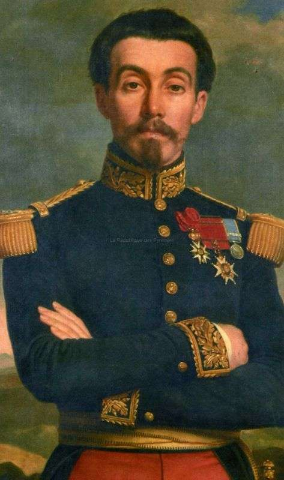

Debido principalmente a la cantidad de deudas, , Inglaterra y España subscribieron el Convenio de Londres, por el cual se comprometieron a intervenir por el uso de la fuerza en México para reclamar sus derechos como acreedores, mientras tanto el Presidente Benito Juárez declaró suspendidos los compromisos adquiridos y aplazó pagar la deuda a las naciones europeas. Tras desembarcar en Veracruz, España e Inglaterra aceptaron las explicaciones mexicanas dadas en los Tratados de La Soledad, los cuales tenían como fundamento, el respeto a la soberanía territorial, el reconocimiento de las naciones acreedoras al Estado Mexicano, la entrada al terreno de las negociaciones para llegar a acuerdos en común, que beneficiaría tanto a la República Mexicana, como a los intereses de las potencias invasoras, y por último, se permitiría que los soldados de los tres países se establecieran en las ciudades mexicanas de Orizaba, Córdoba y Tehuacán durante las negociaciones, debido a lo malsano del clima imperante en el puerto de Veracruz; en caso contrario, los soldados de las tres potencias se retirarían a las costas de Veracruz para así comenzar las hostilidades.
Solo los representantes de España e Inglaterra comprendieron la situación que guardaba la República Mexicana, al analizar los argumentos, decidieron negociar de manera independiente ante la autoridad mexicana, privilegiando a la nación mexicana con un triunfo diplomático, que dadas las difíciles circunstancias, permitió encauzar esfuerzos posteriormente hacia la intervención del Imperio Francés; pero ellos tenían otros planes. El primero, el pronto pago con intereses de la deuda, esto incluía un cobro exagerado por parte de la "Casa Jecker", debido a destrozos causados durante la Guerra de Reforma, dos, tener control total y absoluto de las aduanas, así como intervención directa en la política económica del país, y tres, el más común, imponer un gobierno monárquico en México, con miras a contrarrestar el creciente poderío de los Estados Unidos.
Sin embargo, un mal entendido por parte de los representantes de las tres potencias, aunado a los ambiciosos planes de la representación francesa de sus propios tratados, inicio pronto las hostilidades con el ejército de Napoleón III, dando por iniciada la Segunda Intervención Francesa en México.
Napoleon III
El 5 de mayo de 1862 se produce la Batalla de Puebla, cuando el ejercito francés, al mando del comandante Charles Ferdinand Latrille, aparece por el horizonte en la Hacienda de Remetería cercana a Puebla , cruzando fuego con guerrillas que resistieron. A pesar de ello, continuaron avanzando; de pronto se exhibe una estrategia que dirige hacia el fuerte, medio batallón francés, mientras el otro sigue avanzando con dirección a Puebla.
comandante Charles Ferdinand Latrille

En vista de esto, Ignacio Zaragoza replantea su estrategia y mueve sus tropas hacia los fuertes, sin descuidar el frente de batalla. Contaba el ejército mexicano con unos 4800 hombres, y aunque los franceses llevaban ventajas, tuvieron que rendirse ante los ataques del ejército de caballería dirigido por Zaragoza.
Ignacio Zaragoza

Fue una victoria para México la retirada y el retroceso de tropas llevadas a la rendición por el ejercito de caballería, aunque no impidió una posterior invasión francesa que llevó a una segunda batalla, sin embargo, de forma voluntaria Francia retira sus tropas de Puebla unos meses mas tarde, tras obtener bajas de 11 mil hombres y considerar que las pérdidas no habían valido la pena.
Retirada de Francia


 1
1 2
2 3
3 4
4 5
5 7
7 8
8